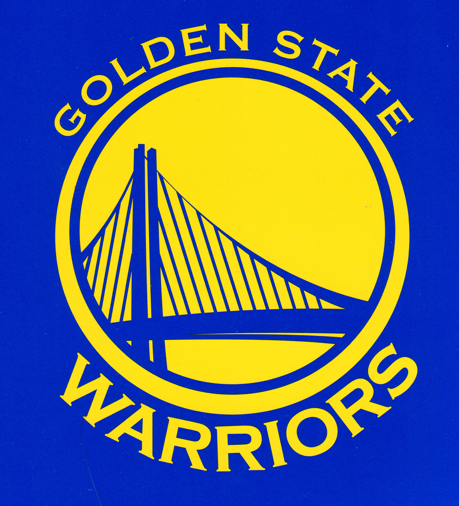
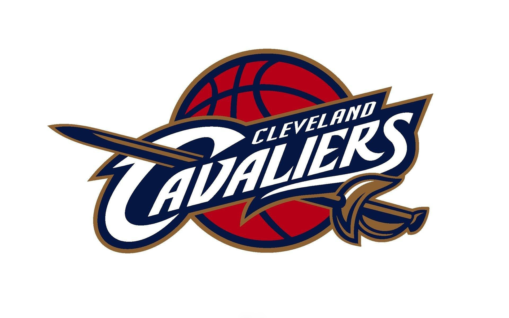
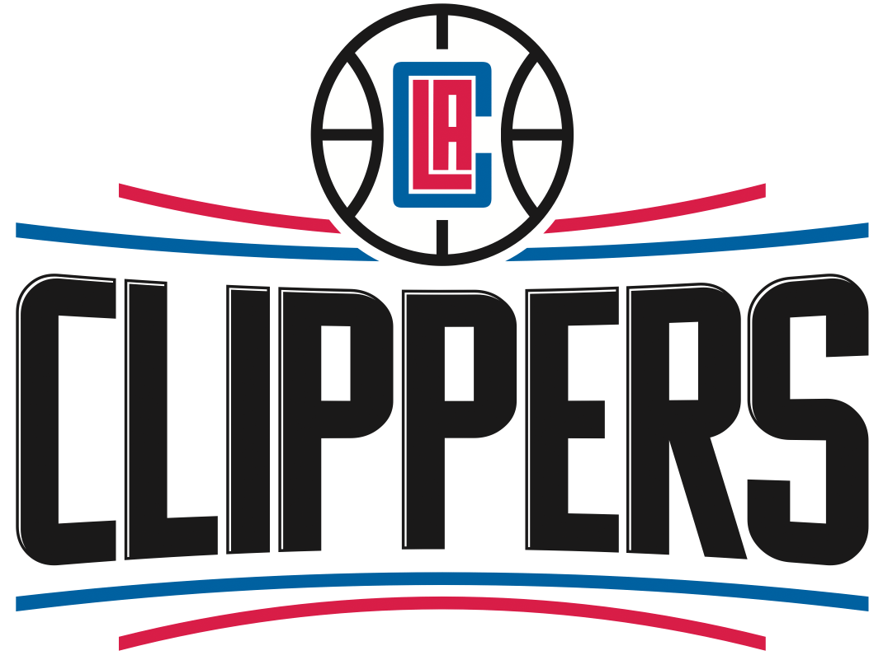
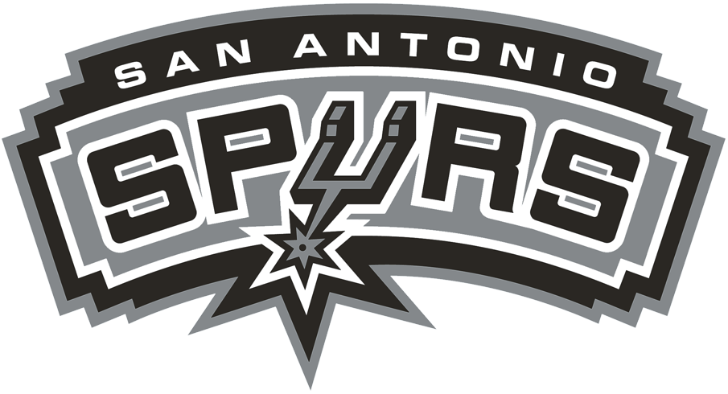
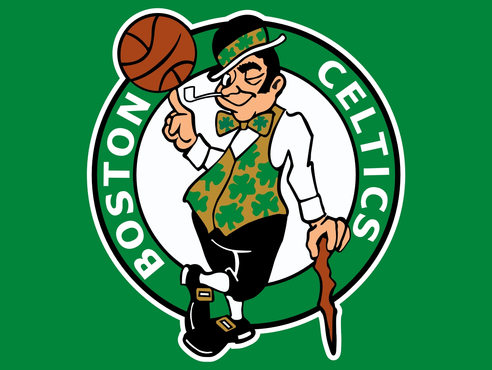
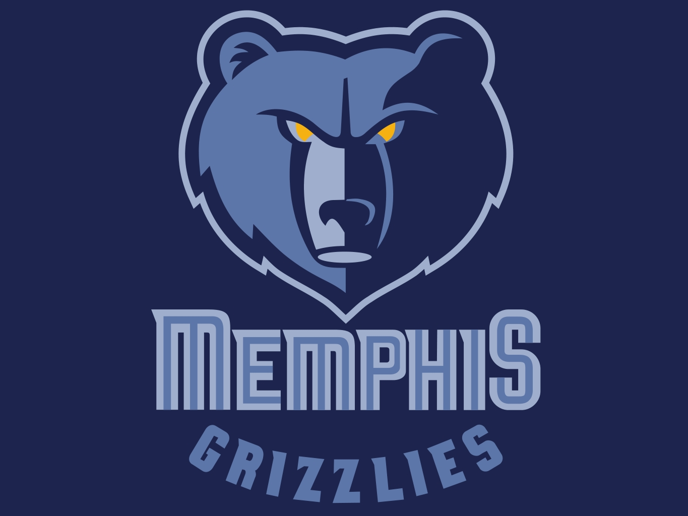
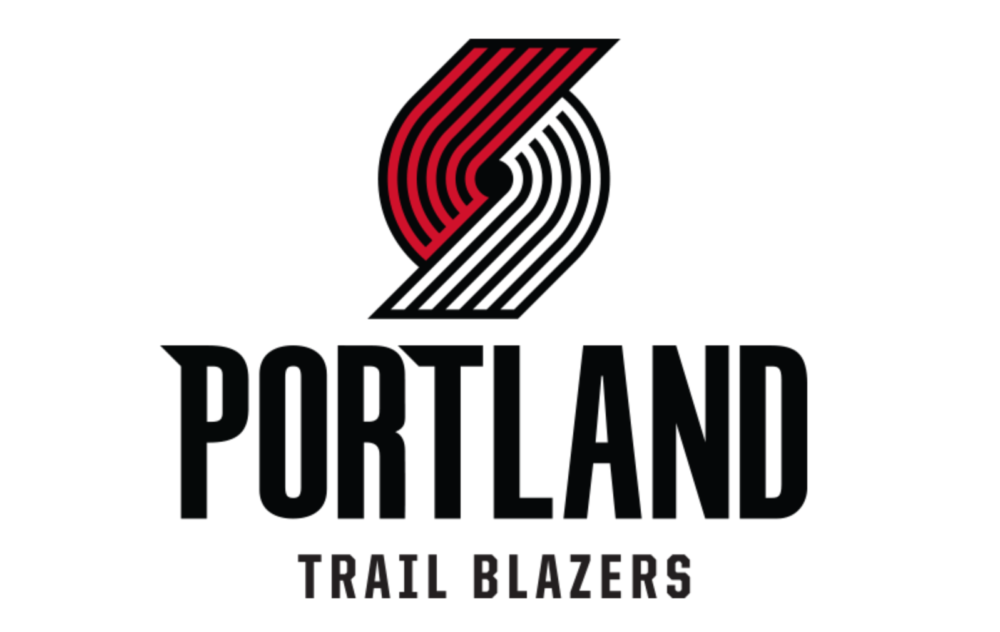

#Koszykówka

Drużyny
Niżej prezętuje Państwu dziesieć najlpeszych drużyn poprzedniego sezonu NBA:
| Logo zespołu | Nazwa zespołu | Tytuły mistrzowskie |
|  | Golden State Warriors | 5 |
|  | Cleveland Cavaliers | 1 |
|  | Los Angeles Clippers | 0 |
|  | San Antonio Spurs | 5 |
| Toronto Raptors | 0 | |
|  | Boston Celtics | 17 |
|  | Memphis Grizzlies | 0 |
| Houston Rockets | 2 | |
|  | Portland Trail Blazers | 1 |
| Utah Jazz | 0 |
Powrót na góre strony Źródło:Wikipedia
Jakub Gniadek gr.5 EiT s171778